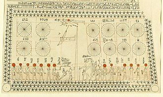
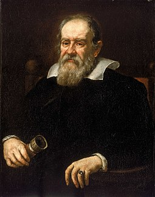

Physics
Physics is the natural science that studies matter,[a] its fundamental constituents, its motion and behavior through space and time, and the related entities of energy and force.[2] Physics is one of the most fundamental scientific disciplines, with its main goal being to understand how the universe behaves.[b][3][4][5] A scientist who specializes in the field of physics is called a physicist.
Physics is one of the oldest academic disciplines and, through its inclusion of astronomy, perhaps the oldest.[6] Over much of the past two millennia, physics, chemistry, biology, and certain branches of mathematics were a part of natural philosophy, but during the Scientific Revolution in the 17th century these natural sciences emerged as unique research endeavors in their own right.[c] Physics intersects with many interdisciplinary areas of research, such as biophysics and quantum chemistry, and the boundaries of physics are not rigidly defined. New ideas in physics often explain the fundamental mechanisms studied by other sciences[3] and suggest new avenues of research in these and other academic disciplines such as mathematics and philosophy.
Advances in physics often enable advances in new technologies. For example, advances in the understanding of electromagnetism, solid-state physics, and nuclear physics led directly to the development of new products that have dramatically transformed modern-day society, such as television, computers, domestic appliances, and nuclear weapons;[3] advances in thermodynamics led to the development of industrialization; and advances in mechanics inspired the development of calculus.
Ancient Astronomy
Astronomy is one of the oldest natural sciences. Early civilizations dating back before 3000 BCE, such as the Sumerians, ancient Egyptians, and the Indus Valley Civilisation, had a predictive knowledge and a basic awareness of the motions of the Sun, Moon, and stars. The stars and planets, believed to represent gods, were often worshipped. While the explanations for the observed positions of the stars were often unscientific and lacking in evidence, these early observations laid the foundation for later astronomy, as the stars were found to traverse great circles across the sky,[6] which could not explain the positions of the planets. According to Asger Aaboe, the origins of Western astronomy can be found in Mesopotamia, and all Western efforts in the exact sciences are descended from late Babylonian astronomy.[11] Egyptian astronomers left monuments showing knowledge of the constellations and the motions of the celestial bodies,[12] while Greek poet Homer wrote of various celestial objects in his Iliad and Odyssey; later Greek astronomers provided names, which are still used today, for most constellations visible from the Northern Hemisphere.[13]
Natural philosophy
Natural philosophy has its origins in Greece during the Archaic period (650 BCE – 480 BCE), when pre-Socratic philosophers like Thales rejected non-naturalistic explanations for natural phenomena and proclaimed that every event had a natural cause.[14] They proposed ideas verified by reason and observation, and many of their hypotheses proved successful in experiment;[15] for example, atomism was found to be correct approximately 2000 years after it was proposed by Leucippus and his pupil Democritus.[16]
Medieval European and Islamic

The Western Roman Empire fell in the fifth century, and this resulted in a decline in intellectual pursuits in the western part of Europe. By contrast, the Eastern Roman Empire (also known as the Byzantine Empire) resisted the attacks from the barbarians, and continued to advance various fields of learning, including physics.[17]
In the sixth century, Isidore of Miletus created an important compilation of Archimedes' works that are copied in the Archimedes Palimpsest.
In sixth-century Europe John Philoponus, a Byzantine scholar, questioned Aristotle's teaching of physics and noted its flaws. He introduced the theory of impetus. Aristotle's physics was not scrutinized until Philoponus appeared; unlike Aristotle, who based his physics on verbal argument, Philoponus relied on observation. On Aristotle's physics Philoponus wrote:
But this is completely erroneous, and our view may be corroborated by actual observation more effectively than by any sort of verbal argument. For if you let fall from the same height two weights of which one is many times as heavy as the other, you will see that the ratio of the times required for the motion does not depend on the ratio of the weights, but that the difference in time is a very small one. And so, if the difference in the weights is not considerable, that is, of one is, let us say, double the other, there will be no difference, or else an imperceptible difference, in time, though the difference in weight is by no means negligible, with one body weighing twice as much as the other[19]
Philoponus' criticism of Aristotelian principles of physics served as an inspiration for Galileo Galilei ten centuries later,[20] during the Scientific Revolution. Galileo cited Philoponus substantially in his works when arguing that Aristotelian physics was flawed.[21][22] In the 1300s Jean Buridan, a teacher in the faculty of arts at the University of Paris, developed the concept of impetus. It was a step toward the modern ideas of inertia and momentum.[23]
Classical
Physics became a separate science when early modern Europeans used experimental and quantitative methods to discover what are now considered to be the laws of physics.[25][page needed]
Major developments in this period include the replacement of the geocentric model of the Solar System with the heliocentric Copernican model, the laws governing the motion of planetary bodies (determined by Kepler between 1609 and 1619), Galileo's pioneering work on telescopes and observational astronomy in the 16th and 17th Centuries, and Isaac Newton's discovery and unification of the laws of motion and universal gravitation (that would come to bear his name).[26] Newton also developed calculus,[d] the mathematical study of continuous change, which provided new mathematical methods for solving physical problems.[27]
The discovery of new laws in thermodynamics, chemistry, and electromagnetics resulted from research efforts during the Industrial Revolution as energy needs increased.[28] The laws comprising classical physics remain very widely used for objects on everyday scales travelling at non-relativistic speeds, since they provide a very close approximation in such situations, and theories such as quantum mechanics and the theory of relativity simplify to their classical equivalents at such scales. Inaccuracies in classical mechanics for very small objects and very high velocities led to the development of modern physics in the 20th century.